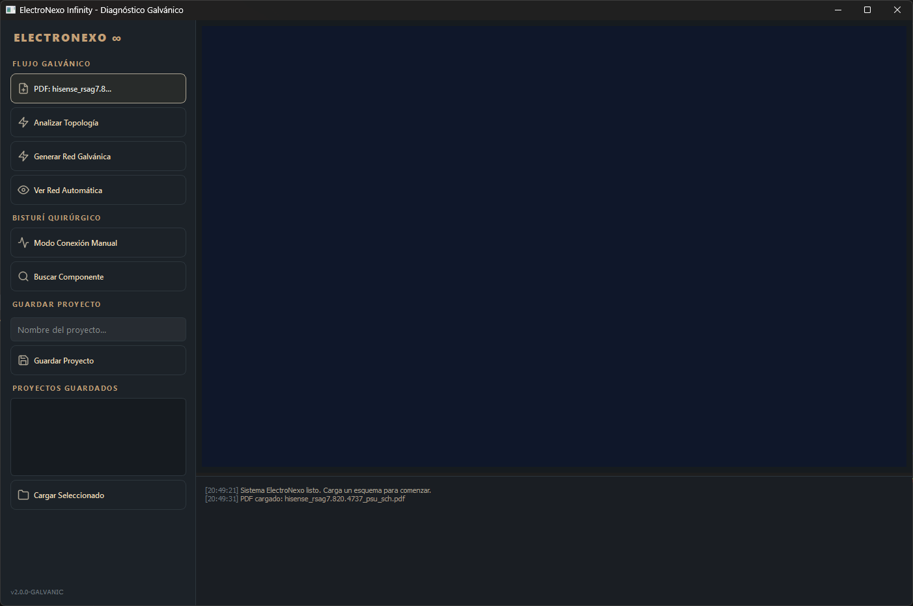
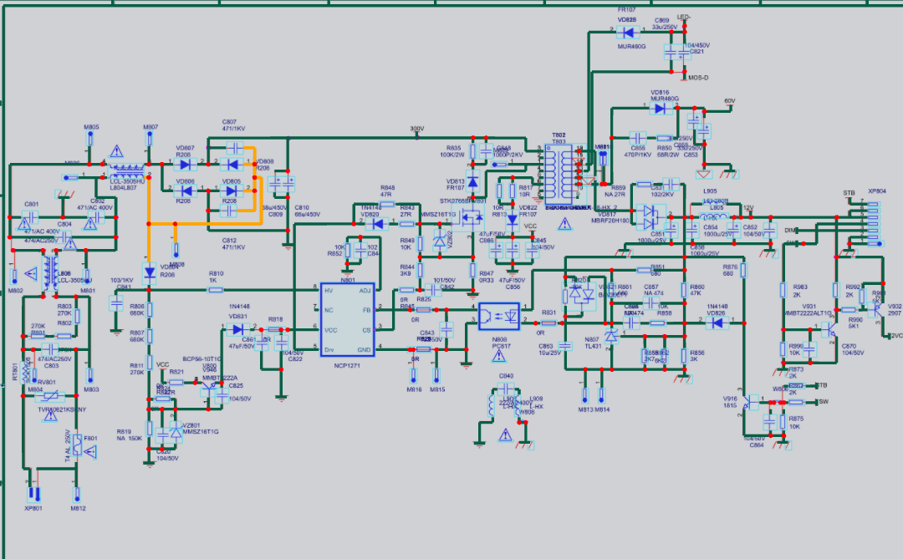
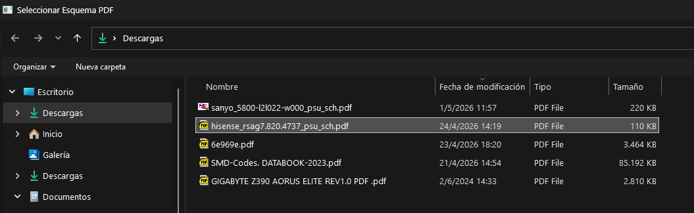
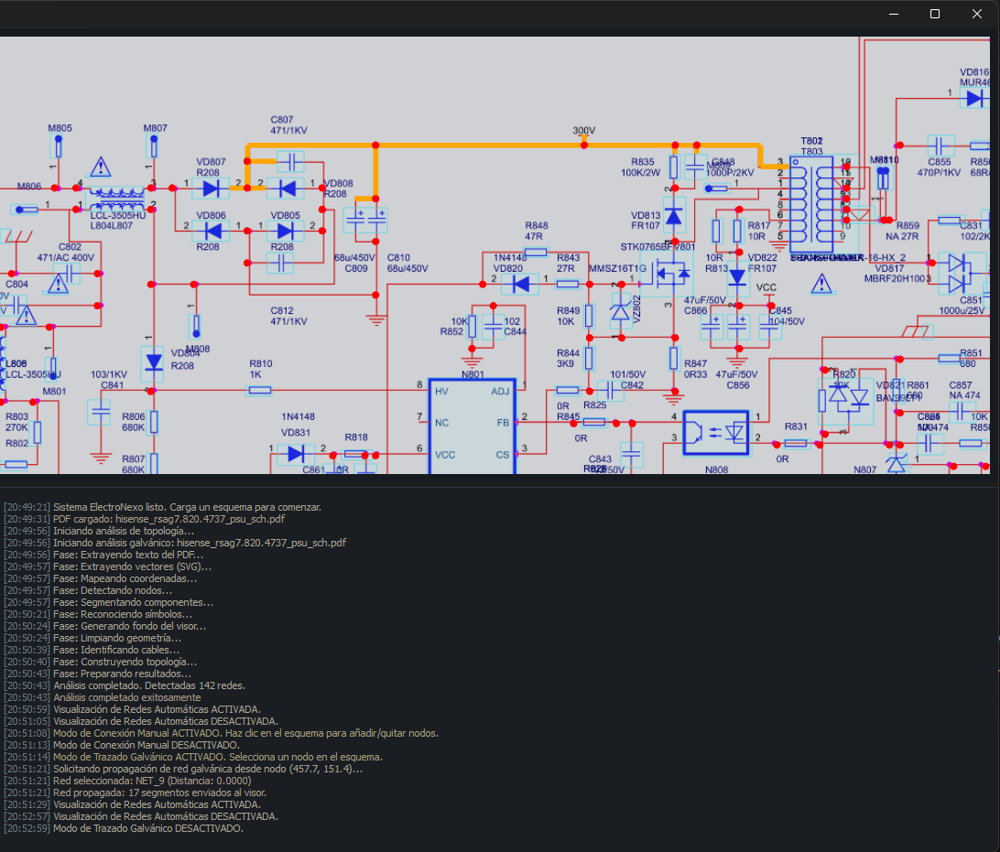
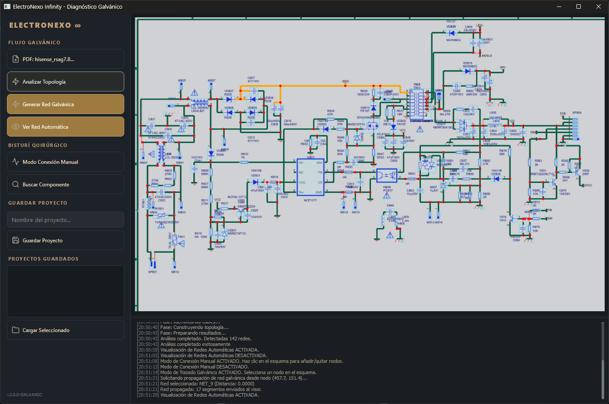
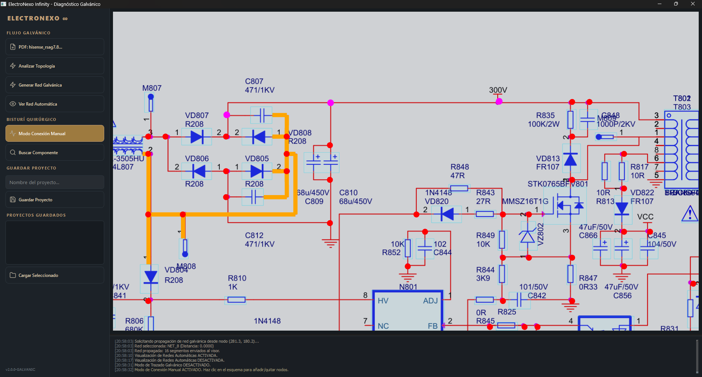
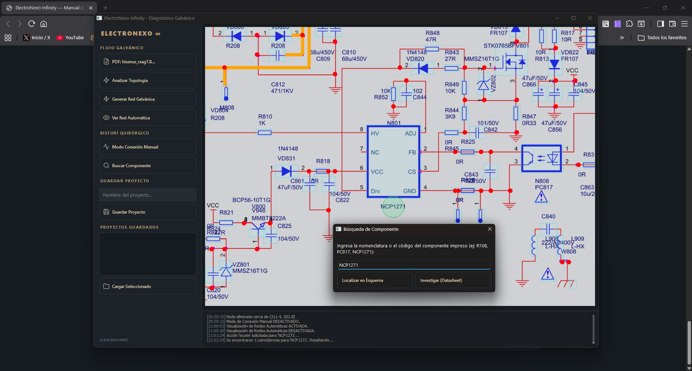
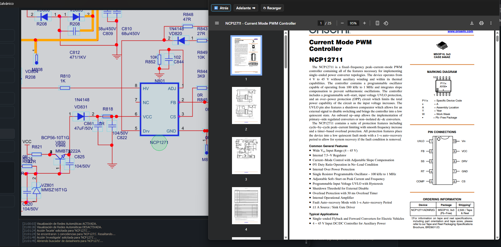
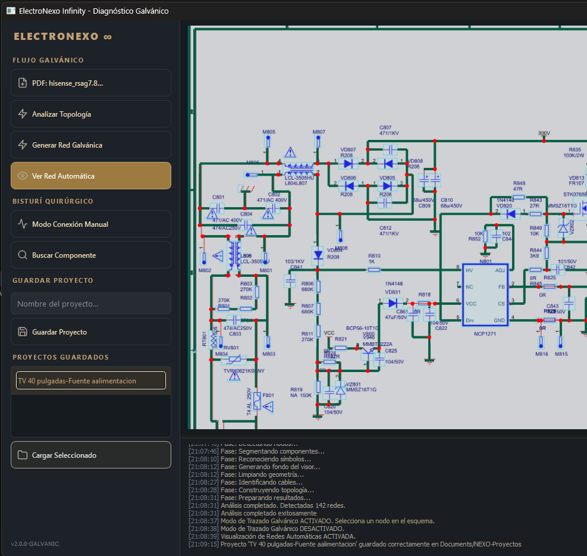

Manual de Usuario
Documentación técnica para la extracción de topologías galvánicas y análisis geométrico de esquemáticos PDF.
Inicio Rápido
Comienza a operar con ElectroNexo en cuatro pasos fundamentales:
- Abre ElectroNexo Infinity (ejecutable autónomo) en tu entorno de trabajo.
- En el panel izquierdo, bajo Flujo Galvánico, haz clic en PDF: cargar... para seleccionar tu archivo de esquema.
- Presiona Analizar Topología. El motor procesará la geometría del documento en background sin congelar la interfaz.
- Utiliza el Visor WebGL y el panel lateral para interactuar, trazar rutas y aislar componentes.

Arquitectura Galvánica (Escudo Azul)
Para garantizar una extracción fiel de las redes eléctricas y evitar falsas continuidades, ElectroNexo implementa un sistema de separación estricta.
Muro de Fuego: Las técnicas de "Escudo Azul" (Blue Shield) y "Recorte Quirúrgico" aíslan matemáticamente el cuerpo de los componentes, asegurando que las pistas eléctricas solo hagan contacto en los terminales válidos.
- Nodos (Magenta/Rojo): Representan los anclajes críticos: uniones eléctricas (junctions) y terminales de conexión.
- Componentes (Zonas Azules): Mediante clausura morfológica, el motor genera islas convexas que engloban el símbolo gráfico, bloqueando el paso de señales parásitas.
- Conductores (Naranja/Cian): Las pistas del esquemático que se detectan como líneas continuas y se intersecan con los recortes quirúrgicos para formar la topología.

Pipeline Geométrico
El procesamiento asíncrono garantiza una experiencia fluida incluso en documentos densos. Al solicitar un análisis, ocurren las siguientes fases:
- Extracción Vectorial: Lee las primitivas SVG filtrando capas de texto suprayacentes.
- Mapeo Zero-Delay: Sincronización instantánea de coordenadas normalizadas al sistema de renderizado.
- Clausura Morfológica: Construcción de islas para componentes mediante proximidad y convex hull.
- Recorte Quirúrgico: Perforación exacta de las islas azules en los puntos donde se detecta un nodo válido.

Control del Visor WebGL
El renderizado se realiza localmente utilizando TextureLoader nativo de alta eficiencia,
eliminando la latencia al inyectar grandes volúmenes de datos JSON.


Bisturí Quirúrgico (Edición Manual)
En esquemas de baja calidad, el OCR o el extractor vectorial pueden omitir conexiones clave.
- Activa Modo Conexión Manual en el panel.
- Haz clic directamente en la intersección que deseas unir.
- El sistema forzará un nodo, perforará la isla cercana y recalculará la continuidad instantáneamente.

Búsqueda Dual de Componentes
Una herramienta diseñada para acelerar la navegación tanto en el documento como en la red.
- Presiona Buscar Componente.
- Escribe la nomenclatura exacta impresa (ej.
NCP1271oU100). - Selecciona Localizar en Esquema para enfocar la cámara, o Investigar para abrir documentación técnica.

Datasheets Integrados
El flujo de investigación no interrumpe tu espacio de trabajo. Al seleccionar la opción de investigar,
ElectroNexo despliega un CustomWebView overlay.
- Navegación nativa con controles de historial (Atrás, Adelante, Recargar).
- Renderizado in-app de PDFs técnicos sin depender de visores externos.
- Búsqueda automática en repositorios como Onsemi o bases de datos de componentes SMD.

Gestión de Proyectos y Memoria
El análisis topológico avanzado puede consumir tiempo. ElectroNexo resuelve esto mediante un sistema dual:
- Caché Temporal: Los análisis en curso se cachean en
data/projects/temp_analysis/para evitar recalcular la geometría si no hay cambios. - Guardar Proyecto: Almacena de forma persistente y segura el proyecto en
Documentos/NEXO-Proyectos/, incluyendo la matriz geométrica, las modificaciones del bisturí y el hash del documento. - Cargar Seleccionado: Restaura sesiones enteras desde el caché local o proyectos guardados en una fracción del tiempo de análisis original.
